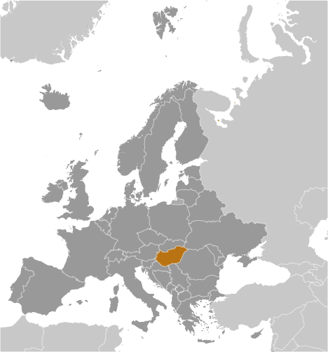
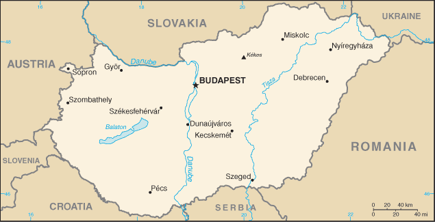
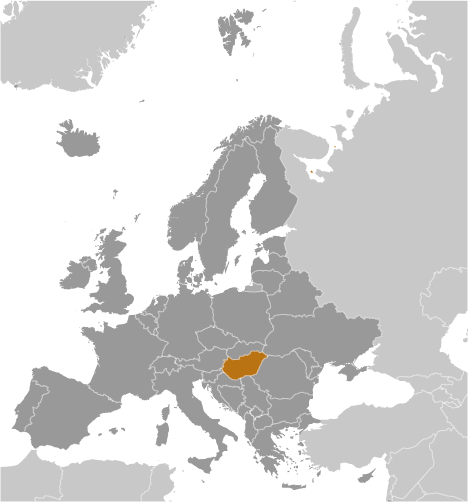
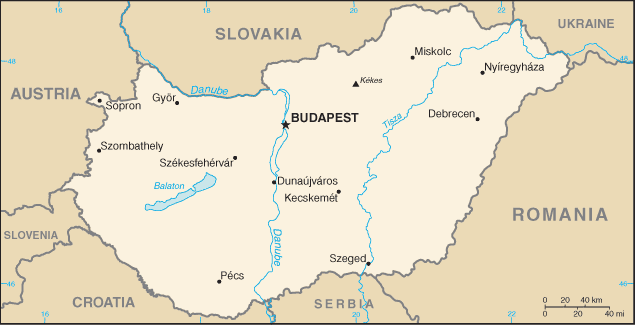

-
Introduction :: Hungary
-
Background:Hungary became a Christian kingdom in A.D. 1000 and for many centuries served as a bulwark against Ottoman Turkish expansion in Europe. The kingdom eventually became part of the polyglot Austro-Hungarian Empire, which collapsed during World War I. The country fell under communist rule following World War II. In 1956, a revolt and an announced withdrawal from the Warsaw Pact were met with a massive military intervention by Moscow. Under the leadership of Janos KADAR in 1968, Hungary began liberalizing its economy, introducing so-called "Goulash Communism." Hungary held its first multiparty elections in 1990 and initiated a free market economy. It joined NATO in 1999 and the EU five years later.
-
Geography :: Hungary
-
Location:Central Europe, northwest of RomaniaGeographic coordinates:47 00 N, 20 00 EMap references:EuropeArea:total: 93,028 sq kmland: 89,608 sq kmwater: 3,420 sq kmcountry comparison to the world: 111Area - comparative:slightly smaller than Virginia; about the same size as IndianaLand boundaries:total: 2,106 kmborder countries (7): Austria 321 km, Croatia 348 km, Romania 424 km, Serbia 164 km, Slovakia 627 km, Slovenia 94 km, Ukraine 128 kmCoastline:0 km (landlocked)Maritime claims:none (landlocked)Climate:temperate; cold, cloudy, humid winters; warm summersTerrain:mostly flat to rolling plains; hills and low mountains on the Slovakian borderElevation:mean elevation: 143 melevation extremes: 78 m lowest point: Tisza River1014 highest point: KekesNatural resources:bauxite, coal, natural gas, fertile soils, arable landLand use:agricultural land: 58.9% (2011 est.)arable land: 48.5% (2011 est.) / permanent crops: 2% (2011 est.) / permanent pasture: 8.4% (2011 est.)forest: 22.5% (2011 est.)other: 18.6% (2011 est.)Irrigated land:1,721 sq km (2012)Population distribution:a fairly even distribution throughout most of the country, with urban areas attracting larger and denser populationsEnvironment - current issues:air and water pollution are some of Hungary's most serious environmental problems; water quality in the Hungarian part of the Danube has improved but is still plagued by pollutants from industry and large-scale agriculture; soil pollutionEnvironment - international agreements:party to: Air Pollution, Air Pollution-Nitrogen Oxides, Air Pollution-Persistent Organic Pollutants, Air Pollution-Sulfur 85, Air Pollution-Sulfur 94, Air Pollution-Volatile Organic Compounds, Antarctic Treaty, Biodiversity, Climate Change, Climate Change-Kyoto Protocol, Desertification, Endangered Species, Environmental Modification, Hazardous Wastes, Law of the Sea, Marine Dumping, Ozone Layer Protection, Ship Pollution, Wetlands, Whalingsigned, but not ratified: none of the selected agreementsGeography - note:landlocked; strategic location astride main land routes between Western Europe and Balkan Peninsula as well as between Ukraine and Mediterranean basin; the north-south flowing Duna (Danube) and Tisza Rivers divide the country into three large regions
-
People and Society :: Hungary
-
Population:9,825,704 (July 2018 est.)country comparison to the world: 92Nationality:noun: Hungarian(s)adjective: HungarianEthnic groups:Hungarian 85.6%, Romani 3.2%, German 1.9%, other 2.6%, unspecified 14.1% (2011 est.)
note: percentages add up to more than 100% because respondents were able to identify more than one ethnic group; Romani populations are usually underestimated in official statistics and may represent 5–10% of Hungary's population
Languages:Hungarian (official) 99.6%, English 16%, German 11.2%, Russian 1.6%, Romanian 1.3%, French 1.2%, other 4.2% (2011 est.)note: shares sum to more than 100% because some respondents gave more than one answer on the census; Hungarian is the mother tongue of 98.9% of Hungarian speakers
Religions:Roman Catholic 37.2%, Calvinist 11.6%, Lutheran 2.2%, Greek Catholic 1.8%, other 1.9%, none 18.2%, unspecified 27.2% (2011 est.)Age structure:0-14 years: 14.66% (male 741,624 /female 698,905)15-24 years: 10.76% (male 546,437 /female 511,214)25-54 years: 42.01% (male 2,077,449 /female 2,050,330)55-64 years: 13.07% (male 593,250 /female 690,784)65 years and over: 19.5% (male 725,728 /female 1,189,983) (2018 est.)population pyramid: The World Factbook Field Image ModalEurope :: Hungary Print
The World Factbook Field Image ModalEurope :: Hungary Print Image DescriptionThis is the population pyramid for Hungary. A population pyramid illustrates the age and sex structure of a country's population and may provide insights about political and social stability, as well as economic development. The population is distributed along the horizontal axis, with males shown on the left and females on the right. The male and female populations are broken down into 5-year age groups represented as horizontal bars along the vertical axis, with the youngest age groups at the bottom and the oldest at the top. The shape of the population pyramid gradually evolves over time based on fertility, mortality, and international migration trends.
Image DescriptionThis is the population pyramid for Hungary. A population pyramid illustrates the age and sex structure of a country's population and may provide insights about political and social stability, as well as economic development. The population is distributed along the horizontal axis, with males shown on the left and females on the right. The male and female populations are broken down into 5-year age groups represented as horizontal bars along the vertical axis, with the youngest age groups at the bottom and the oldest at the top. The shape of the population pyramid gradually evolves over time based on fertility, mortality, and international migration trends.
For additional information, please see the entry for Population pyramid on the Definitions and Notes page under the References tab.Dependency ratios:total dependency ratio: 46.9 (2015 est.)youth dependency ratio: 21.2 (2015 est.)elderly dependency ratio: 25.7 (2015 est.)potential support ratio: 3.9 (2015 est.)Median age:total: 42.7 yearsmale: 40.8 yearsfemale: 44.7 years (2018 est.)country comparison to the world: 25Population growth rate:-0.26% (2018 est.)country comparison to the world: 214Birth rate:8.9 births/1,000 population (2018 est.)country comparison to the world: 206Death rate:12.8 deaths/1,000 population (2018 est.)country comparison to the world: 12Net migration rate:1.3 migrant(s)/1,000 population (2017 est.)country comparison to the world: 54Population distribution:a fairly even distribution throughout most of the country, with urban areas attracting larger and denser populationsUrbanization:urban population: 71.4% of total population (2018)rate of urbanization: 0.07% annual rate of change (2015-20 est.)Major urban areas - population:1.759 million BUDAPEST (capital) (2018)Sex ratio:at birth: 1.06 male(s)/female (2017 est.)0-14 years: 1.06 male(s)/female (2017 est.)15-24 years: 1.07 male(s)/female (2017 est.)25-54 years: 1.01 male(s)/female (2017 est.)55-64 years: 0.85 male(s)/female (2017 est.)65 years and over: 0.6 male(s)/female (2017 est.)total population: 0.91 male(s)/female (2017 est.)Mother's mean age at first birth:28.3 years (2014 est.)Maternal mortality rate:17 deaths/100,000 live births (2015 est.)country comparison to the world: 131Infant mortality rate:total: 4.8 deaths/1,000 live births (2018 est.)male: 5.1 deaths/1,000 live births (2018 est.)female: 4.5 deaths/1,000 live births (2018 est.)country comparison to the world: 177Life expectancy at birth:total population: 76.3 years (2018 est.)male: 72.6 years (2018 est.)female: 80.2 years (2018 est.)country comparison to the world: 88Total fertility rate:1.45 children born/woman (2018 est.)country comparison to the world: 205Contraceptive prevalence rate:61.6% (2008/09)note: percent of women aged 25-49
Health expenditures:7.4% of GDP (2014)country comparison to the world: 71Physicians density:3.09 physicians/1,000 population (2015)Hospital bed density:7 beds/1,000 population (2013)Drinking water source:improved: urban: 100% of populationrural: 100% of populationtotal: 100% of populationunimproved: urban: 0% of populationrural: 0% of populationtotal: 0% of population (2015 est.)Sanitation facility access:improved: urban: 97.8% of population (2015 est.)rural: 98.6% of population (2015 est.)total: 98% of population (2015 est.)unimproved: urban: 2.2% of population (2015 est.)rural: 1.4% of population (2015 est.)total: 2% of population (2015 est.)HIV/AIDS - adult prevalence rate:<.1% (2017 est.)HIV/AIDS - people living with HIV/AIDS:2,800 (2017 est.)country comparison to the world: 125HIV/AIDS - deaths:<100 (2017 est.)Major infectious diseases:degree of risk: intermediate (2016)vectorborne diseases: tickborne encephalitis (2016)Obesity - adult prevalence rate:26.4% (2016)country comparison to the world: 41Education expenditures:4.6% of GDP (2014)country comparison to the world: 89Literacy:definition: age 15 and over can read and write (2015 est.)total population: 99.1% (2015 est.)male: 99.1% (2015 est.)female: 99% (2015 est.)School life expectancy (primary to tertiary education):total: 15 years (2015)male: 15 years (2015)female: 16 years (2015)Unemployment, youth ages 15-24:total: 12.9% (2016 est.)male: 12.9% (2016 est.)female: 12.9% (2016 est.)country comparison to the world: 103 -
Government :: Hungary
-
Country name:conventional long form: noneconventional short form: Hungarylocal long form: nonelocal short form: Magyarorszagformer: Kingdom of Hungary, Hungarian People's Republic, Hungarian Soviet Republic, Hungarian Republicetymology: the Byzantine Greeks refered to the tribes that arrived on the steppes of Eastern Europe in the 9th century as the "Oungroi," a name that was later Latinized to "Ungri" and which became "Hungari"; the name originally meant an "[alliance of] ten tribes"; the Hungarian name "Magyarorszag" means "Country of the Magyars"; the term may derive from the most prominent of the Hungarian tribes, the MegyerGovernment type:parliamentary republicCapital:name: Budapestgeographic coordinates: 47 30 N, 19 05 Etime difference: UTC+1 (6 hours ahead of Washington, DC, during Standard Time)daylight saving time: +1hr, begins last Sunday in March; ends last Sunday in OctoberAdministrative divisions:
19 counties (megyek, singular - megye), 23 cities with county rights (megyei jogu varosok, singular - megyei jogu varos), and 1 capital city (fovaros)
counties: Bacs-Kiskun, Baranya, Bekes, Borsod-Abauj-Zemplen, Csongrad, Fejer, Gyor-Moson-Sopron, Hajdu-Bihar, Heves, Jasz-Nagykun-Szolnok, Komarom-Esztergom, Nograd, Pest, Somogy, Szabolcs-Szatmar-Bereg, Tolna, Vas, Veszprem, Zala;
cities with county rights: Bekescsaba, Debrecen, Dunaujvaros, Eger, Erd, Gyor, Hodmezovasarhely, Kaposvar, Kecskemet, Miskolc, Nagykanizsa, Nyiregyhaza, Pecs, Salgotarjan, Sopron, Szeged, Szekesfehervar, Szekszard, Szolnok, Szombathely, Tatabanya, Veszprem, Zalaegerszeg;
capital city: Budapest
Independence:16 November 1918 (republic proclaimed); notable earlier dates: 25 December 1000 (crowning of King STEPHEN I, traditional founding date); 30 March 1867 (Austro-Hungarian dual monarchy established)National holiday:Saint Stephen's Day, 20 August (1083); note - commemorates his canonization and the transfer of his remains to Buda (now Budapest) in 1083Constitution:history: previous 1949 (heavily amended in 1989 following the collapse of communism); latest approved 18 April 2011, signed 25 April 2011, effective 1 January 2012 (2018)amendments: proposed by the president of the republic, by the government, by parliamentary committee, or by Parliament members; passage requires two-thirds majority vote of Parliament members and approval by the president; amended several times, last in 2016 (2018)Legal system:civil legal system influenced by the German modelInternational law organization participation:accepts compulsory ICJ jurisdiction with reservations; accepts ICCt jurisdictionCitizenship:citizenship by birth: nocitizenship by descent only: at least one parent must be a citizen of Hungarydual citizenship recognized: yesresidency requirement for naturalization: 8 yearsSuffrage:18 years of age, 16 if married and marriage is registered in Hungary; universalJudicial branch:highest courts: Curia or Supreme Judicial Court (consists of the president, vice president, department heads, and approximately 91 judges and is organized into civil, criminal, and administrative-labor departments; Constitutional Court (consists of 15 judges including the court president and vice president)judge selection and term of office: Curia president elected by the National Assembly on the recommendation of the president of the republic; other Curia judges appointed by the president upon the recommendation of the National Judicial Council, a separate 15-member administrative body; judge tenure based on interim evaluations until normal retirement age; Constitutional Court judges, including the president of the court elected by the National Assembly; court vice president elected by the court itself; members serve 12-year terms with mandatory retirement at age 70subordinate courts: 5 regional courts of appeal; 19 regional or county courts (including Budapest Metropolitan Court); 20 administrative-labor courts; 111 district or local courtsExecutive branch:chief of state: President Janos ADER (since 10 May 2012)head of government: Prime Minister Viktor ORBAN (since 29 May 2010)cabinet: Cabinet of Ministers proposed by the prime minister and appointed by the presidentelections/appointments: president indirectly elected by the National Assembly with two-thirds majority vote in first round or simple majority vote in second round for a 5-year term (eligible for a second term); election last held on 13 March 2017 (next to be held spring 2022); prime minister elected by the National Assembly on the recommendation of the president; election last held on 10 May 2018 (next to be held by spring 2022)election results: Janos ADER (Fidesz) reelected president; National Assembly vote - 131 to 39; Viktor ORBAN (Fidesz) reelected prime minister; National Assembly vote - 134 to 28Legislative branch:description: unicameral National Assembly or Orszaggyules (199 seats; 106 members directly elected in single-member constituencies by simple majority vote and 93 members directly elected in a single nationwide constituency by party list proportional representation vote; members serve 4-year terms)elections: last held on 8 April 2018 (next to be held in April 2022)election results: percent of vote by party list - Fidesz-KDNP 49.3%, Jobbik 19.1%, MSZP-PM 11.9%, LMP 7.1%, DK 5.4%, Together 0.7%, LdU 0.5%, other 6%; seats by party - Fidesz 117, Jobbik 26, KDNP 16, MSZP 15, LMP 9, DK 9, PM 5, LdU 1, independent 1; composition - men 174, women 25, percent of women 12.6%Political parties and leaders:Christian Democratic People's Party or KDNP [Zsolt SEMJEN]
Democratic Coalition or DK [Ferenc GYURCSANY]
Dialogue for Hungary or PM [Gergely KARACSONY, Timea SZABO]
Fidesz-Hungarian Civic Alliance or Fidesz [Viktor ORBAN]
Hungarian Liberal Party or MLP [Gabor FODOR]
Hungarian Socialist Party or MSZP [Bertalan TOTH]
Momentum (Momentum Mozgalom) [Andras FEKETE-GYOR]
Movement for a Better Hungary or Jobbik [Janos VOLNER]
National Self-Government of Germans in Hungary or LdU [Otto HEINEK]
Politics Can Be Different or LMP
Together (Egyutt) [Gordon BAJNAI, Peter JUHASZ, Peter KONYA, cochairs] (includes the civil organizations Patriotism and Progress (Haza es Haladas), One Million for Press Freedom (Egy millio a sajto szabadsagert) or Milla, Hungarian Solidarity Movement (Magyar Szolidaritas Mozgalom); note - formerly, Egyutt 2014 or E14)International organization participation:Australia Group, BIS, CD, CE, CEI, CERN, EAPC, EBRD, ECB, EIB, ESA (cooperating state), EU, FAO, G-9, IAEA, IBRD, ICAO, ICC (national committees), ICCt, ICRM, IDA, IEA, IFAD, IFC, IFRCS, ILO, IMF, IMO, IMSO, Interpol, IOC, IOM, IPU, ISO, ITSO, ITU, ITUC (NGOs), MIGA, MINURSO, NATO, NEA, NSG, OAS (observer), OECD, OIF (observer), OPCW, OSCE, PCA, Schengen Convention, SELEC, UN, UNCTAD, UNESCO, UNFICYP, UNHCR, UNIDO, UNIFIL, UNWTO, UPU, WCO, WFTU (NGOs), WHO, WIPO, WMO, WTO, ZCDiplomatic representation in the US:chief of mission: Ambassador Laszlo SZABO (since 8 September 2017)chancery: 3910 Shoemaker Street NW, Washington, DC 20008telephone: [1] (202) 362-6730FAX: [1] (202) 966-8135consulate(s) general: Los Angeles, New Yorkconsulate(s): BostonDiplomatic representation from the US:chief of mission: Ambassador David B. CORNSTEIN (since 25 June 2018)embassy: Szabadsag ter 12, H-1054 Budapestmailing address: pouch: American Embassy Budapest, 5270 Budapest Place, US Department of State, Washington, DC 20521-5270telephone: [36] (1) 475-4400FAX: [36] (1) 475-4248Flag description:three equal horizontal bands of red (top), white, and green; the flag dates to the national movement of the 18th and 19th centuries, and fuses the medieval colors of the Hungarian coat of arms with the revolutionary tricolor form of the French flag; folklore attributes virtues to the colors: red for strength, white for faithfulness, and green for hope; alternatively, the red is seen as being for the blood spilled in defense of the land, white for freedom, and green for the pasturelands that make up so much of the countryNational symbol(s):Holy Crown of Hungary (Crown of Saint Stephen); national colors: red, white, greenNational anthem:name: "Himnusz" (Hymn)lyrics/music: Ferenc KOLCSEY/Ferenc ERKELnote: adopted 1844
-
Economy :: Hungary
-
Economy - overview:
Hungary has transitioned from a centrally planned to a market-driven economy with a per capita income approximately two-thirds of the EU-28 average; however, in recent years the government has become more involved in managing the economy. Budapest has implemented unorthodox economic policies to boost household consumption and has relied on EU-funded development projects to generate growth.
Following the fall of communism in 1990, Hungary experienced a drop-off in exports and financial assistance from the former Soviet Union. Hungary embarked on a series of economic reforms, including privatization of state-owned enterprises and reduction of social spending programs, to shift from a centrally planned to a market-driven economy, and to reorient its economy towards trade with the West. These efforts helped to spur growth, attract investment, and reduce Hungary’s debt burden and fiscal deficits. Despite these reforms, living conditions for the average Hungarian initially deteriorated as inflation increased and unemployment reached double digits. Conditions slowly improved over the 1990s as the reforms came to fruition and export growth accelerated. Economic policies instituted during that decade helped position Hungary to join the European Union in 2004. Hungary has not yet joined the euro-zone. Hungary suffered a historic economic contraction as a result of the global economic slowdown in 2008-09 as export demand and domestic consumption dropped, prompting it to take an IMF-EU financial assistance package.
Since 2010, the government has backpedaled on many economic reforms and taken a more populist approach towards economic management. The government has favored national industries and government-linked businesses through legislation, regulation, and public procurements. In 2011 and 2014, Hungary nationalized private pension funds, which squeezed financial service providers out of the system, but also helped Hungary curb its public debt and lower its budget deficit to below 3% of GDP, as subsequent pension contributions have been channeled into the state-managed pension fund. Hungary’s public debt (at 74.5% of GDP) is still high compared to EU peers in Central Europe. Real GDP growth has been robust in the past few years due to increased EU funding, higher EU demand for Hungarian exports, and a rebound in domestic household consumption. To further boost household consumption ahead of the 2018 election, the government embarked on a six-year phased increase to minimum wages and public sector salaries, decreased taxes on foodstuffs and services, cut the personal income tax from 16% to 15%, and implemented a uniform 9% business tax for small and medium-sized enterprises and large companies. Real GDP growth slowed in 2016 due to a cyclical decrease in EU funding, but increased to 3.8% in 2017 as the government pre-financed EU funded projects ahead of the 2018 election.
Systemic economic challenges include pervasive corruption, labor shortages driven by demographic declines and migration, widespread poverty in rural areas, vulnerabilities to changes in demand for exports, and a heavy reliance on Russian energy imports.
GDP (purchasing power parity):$289.6 billion (2017 est.)$278.5 billion (2016 est.)$272.5 billion (2015 est.)note: data are in 2017 dollars
country comparison to the world: 59GDP (official exchange rate):$139.2 billion (2017 est.) (2017 est.)GDP - real growth rate:4% (2017 est.)2.2% (2016 est.)3.4% (2015 est.)country comparison to the world: 76GDP - per capita (PPP):$29,600 (2017 est.)$28,300 (2016 est.)$27,600 (2015 est.)note: data are in 2017 dollars
country comparison to the world: 68Gross national saving:25.7% of GDP (2017 est.)25.8% of GDP (2016 est.)25.3% of GDP (2015 est.)country comparison to the world: 54GDP - composition, by end use:household consumption: 49.6% (2017 est.)government consumption: 20% (2017 est.)investment in fixed capital: 21.6% (2017 est.)investment in inventories: 1% (2017 est.)exports of goods and services: 90.2% (2017 est.)imports of goods and services: -82.4% (2017 est.)GDP - composition, by sector of origin:agriculture: 3.9% (2017 est.)industry: 31.3% (2017 est.)services: 64.8% (2017 est.)Agriculture - products:wheat, corn, sunflower seed, potatoes, sugar beets; pigs, cattle, poultry, dairy productsIndustries:mining, metallurgy, construction materials, processed foods, textiles, chemicals (especially pharmaceuticals), motor vehiclesIndustrial production growth rate:7.4% (2017 est.)country comparison to the world: 29Labor force:4.599 million (2017 est.)country comparison to the world: 87Labor force - by occupation:agriculture: 4.9%industry: 30.3%services: 64.5% (2015 est.)Unemployment rate:4.2% (2017 est.)5.1% (2016 est.)country comparison to the world: 54Population below poverty line:14.9% (2015 est.)Distribution of family income - Gini index:28.2 (2015 est.)28.6 (2014)country comparison to the world: 140Budget:revenues: 61.98 billion (2017 est.)expenditures: 64.7 billion (2017 est.)Taxes and other revenues:44.5% (of GDP) (2017 est.)country comparison to the world: 23Budget surplus (+) or deficit (-):-2% (of GDP) (2017 est.)note: Hungary has been under the EU Excessive Deficit Procedure since it joined the EU in 2004; in March 2012, the EU elevated its Excessive Deficit Procedure against Hungary and proposed freezing 30% of the country's Cohesion Funds because 2011 deficit reductions were not achieved in a sustainable manner; in June 2012, the EU lifted the freeze, recognizing that steps had been taken to reduce the deficit; the Hungarian deficit increased above 3% both in 2013 and in 2014 due to sluggish growth and the government's fiscal tightening
country comparison to the world: 104Public debt:73.6% of GDP (2017 est.)76% of GDP (2016 est.)note: general government gross debt is defined in the Maastricht Treaty as consolidated general government gross debt at nominal value, outstanding at the end of the year in the following categories of government liabilities: currency and deposits, securities other than shares excluding financial derivatives, and national, state, and local government and social security funds.
country comparison to the world: 43Fiscal year:calendar yearInflation rate (consumer prices):2.4% (2017 est.)0.4% (2016 est.)country comparison to the world: 119Central bank discount rate:0.9% (31 December 2017)0.9% (31 December 2016)country comparison to the world: 134Commercial bank prime lending rate:1.48% (31 December 2017 est.)2.09% (31 December 2016 est.)country comparison to the world: 190Stock of narrow money:$74.77 billion (31 December 2017 est.)$55.48 billion (31 December 2016 est.)country comparison to the world: 46Stock of broad money:$74.77 billion (31 December 2017 est.)$55.48 billion (31 December 2016 est.)country comparison to the world: 46Stock of domestic credit:$86.22 billion (31 December 2017 est.)$69.76 billion (31 December 2016 est.)country comparison to the world: 56Current account balance:$4.39 billion (2017 est.)$7.597 billion (2016 est.)country comparison to the world: 30Exports:$98.74 billion (2017 est.)$91.6 billion (2016 est.)country comparison to the world: 38Exports - partners:Germany 27.7%, Romania 5.4%, Italy 5.1%, Austria 5%, Slovakia 4.8%, France 4.4%, Czech Republic 4.4%, Poland 4.3% (2017)Exports - commodities:machinery and equipment (55.8%), other manufactures (32.7%), food products (6.8%), raw materials (2.4%), fuels and electricity (2.3%) (2017 est.)Imports:$96.3 billion (2017 est.)$83.5 billion (2016 est.)country comparison to the world: 35Imports - commodities:machinery and equipment 45.4%, other manufactures 34.3%, fuels and electricity 12.6%, food products 5.3%, raw materials 2.5% (2012)Imports - partners:Germany 26.2%, Austria 6.3%, China 5.9%, Poland 5.5%, Slovakia 5.3%, Netherlands 5%, Czech Republic 4.8%, Italy 4.7%, France 4% (2017)Reserves of foreign exchange and gold:$28 billion (31 December 2017 est.)$25.82 billion (31 December 2016 est.)country comparison to the world: 52Debt - external:$138.1 billion (31 December 2017 est.)$131.3 billion (31 December 2016 est.)country comparison to the world: 43Stock of direct foreign investment - at home:$290 billion (31 December 2017 est.)$298.2 billion (31 December 2016 est.)country comparison to the world: 22Stock of direct foreign investment - abroad:$212 billion (31 December 2017 est.)$222.6 billion (31 December 2016 est.)country comparison to the world: 27Exchange rates:forints (HUF) per US dollar -279.5 (2017 est.)281.52 (2016 est.)281.52 (2015 est.)279.33 (2014 est.)232.6 (2013 est.) -
Energy :: Hungary
-
Electricity access:electrification - total population: 100% (2016)Electricity - production:30.22 billion kWh (2016 est.)country comparison to the world: 64Electricity - consumption:39.37 billion kWh (2016 est.)country comparison to the world: 56Electricity - exports:5.24 billion kWh (2016 est.)country comparison to the world: 34Electricity - imports:17.95 billion kWh (2016 est.)country comparison to the world: 13Electricity - installed generating capacity:8.639 million kW (2016 est.)country comparison to the world: 67Electricity - from fossil fuels:64% of total installed capacity (2016 est.)country comparison to the world: 122Electricity - from nuclear fuels:22% of total installed capacity (2017 est.)country comparison to the world: 5Electricity - from hydroelectric plants:1% of total installed capacity (2017 est.)country comparison to the world: 148Electricity - from other renewable sources:13% of total installed capacity (2017 est.)country comparison to the world: 67Crude oil - production:14,000 bbl/day (2017 est.)country comparison to the world: 74Crude oil - exports:2,713 bbl/day (2017 est.)country comparison to the world: 69Crude oil - imports:121,000 bbl/day (2017 est.)country comparison to the world: 40Crude oil - proved reserves:24 million bbl (1 January 2018 est.)country comparison to the world: 82Refined petroleum products - production:152,400 bbl/day (2017 est.)country comparison to the world: 59Refined petroleum products - consumption:167,700 bbl/day (2017 est.)country comparison to the world: 62Refined petroleum products - exports:58,720 bbl/day (2017 est.)country comparison to the world: 50Refined petroleum products - imports:82,110 bbl/day (2017 est.)country comparison to the world: 62Natural gas - production:1.812 billion cu m (2017 est.)country comparison to the world: 60Natural gas - consumption:10.39 billion cu m (2017 est.)country comparison to the world: 46Natural gas - exports:3.52 billion cu m (2017 est.)country comparison to the world: 34Natural gas - imports:13.37 billion cu m (2017 est.)country comparison to the world: 24Natural gas - proved reserves:6.598 billion cu m (1 January 2018 est.)country comparison to the world: 83Carbon dioxide emissions from consumption of energy:51.28 million Mt (2017 est.)country comparison to the world: 59
-
Communications :: Hungary
-
Telephones - fixed lines:total subscriptions: 3,131,598 (2017 est.)subscriptions per 100 inhabitants: 32 (2017 est.)country comparison to the world: 44Telephones - mobile cellular:total subscriptions: 12,030,940 (2017 est.)subscriptions per 100 inhabitants: 122 (2017 est.)country comparison to the world: 75Telephone system:general assessment: modern telephone system is digital and highly automated; trunk services are carried by fiber-optic cable and digital microwave radio relay; regulator preps for 5G spectrum auction in 2019 (2017)domestic: competition among mobile-cellular service providers has led to a sharp increase in the use of mobile-cellular phones 122 per 100 and a decrease in the number of fixed-line connections 32 per 100 persons (2017)international: country code - 36; Hungary has fiber-optic cable connections with all neighboring countries; the international switch is in Budapest; satellite earth stations - 2 Intelsat (Atlantic Ocean and Indian Ocean regions), 1 Inmarsat, 1 very small aperture terminal (VSAT) system of ground terminals (2015)Broadcast media:mixed system of state-supported public service broadcast media and private broadcasters; the 5 publicly owned TV channels and the 2 main privately owned TV stations are the major national broadcasters; a large number of special interest channels; highly developed market for satellite and cable TV services with about two-thirds of viewers utilizing their services; 4 state-supported public-service radio networks; a large number of local stations including commercial, public service, nonprofit, and community radio stations; digital transition completed at the end of 2013; government-linked businesses have greatly consolidated ownership in broadcast and print media (2018)Internet country code:.huInternet users:total: 7,826,695 (July 2016 est.)percent of population: 79.3% (July 2016 est.)country comparison to the world: 54Broadband - fixed subscriptions:total: 2,956,585 (2017 est.)subscriptions per 100 inhabitants: 30 (2017 est.)country comparison to the world: 41
-
Transportation :: Hungary
-
National air transport system:number of registered air carriers: 5 (2015)inventory of registered aircraft operated by air carriers: 75 (2015)annual passenger traffic on registered air carriers: 20,042,185 (2015)annual freight traffic on registered air carriers: 0 mt-km (2015)Civil aircraft registration country code prefix:HA (2016)Airports:41 (2013)country comparison to the world: 103Airports - with paved runways:total: 20 (2017)over 3,047 m: 2 (2017)2,438 to 3,047 m: 6 (2017)1,524 to 2,437 m: 6 (2017)914 to 1,523 m: 5 (2017)under 914 m: 1 (2017)Airports - with unpaved runways:total: 21 (2013)1,524 to 2,437 m: 2 (2013)914 to 1,523 m: 8 (2013)under 914 m: 11 (2013)Heliports:3 (2013)Pipelines:5874 km gas (high-pressure transmission system), 83732 km gas (low-pressure distribution network), 850 km oil, 1200 km refined products (2016)Railways:total: 8,049 km (2014)standard gauge: 7,794 km 1.435-m gauge (2,889 km electrified) (2014)narrow gauge: 219 km 0.760-m gauge (2014)broad gauge: 36 km 1.524-m gauge (2014)country comparison to the world: 28Roadways:total: 203,601 km (2014)paved: 77,087 km (includes 1,582 km of expressways) (2014)unpaved: 126,514 km (2014)country comparison to the world: 26Waterways:1,622 km (most on Danube River) (2011)country comparison to the world: 47Ports and terminals:river port(s): Baja, Csepel (Budapest), Dunaujvaros, Gyor-Gonyu, Mohacs (Danube)
-
Military and Security :: Hungary
-
Military expenditures:1.01% of GDP (2016)0.93% of GDP (2015)0.87% of GDP (2014)0.95% of GDP (2013)1.04% of GDP (2012)country comparison to the world: 111Military branches:Hungarian Defense Forces: Land Forces, Hungarian Air Force (Magyar Legiero, ML) (2011)Military service age and obligation:18-25 years of age for voluntary military service; no conscription; 6-month service obligation (2012)
-
Transnational Issues :: Hungary
-
Disputes - international:bilateral government, legal, technical and economic working group negotiations continue in 2006 with Slovakia over Hungary's failure to complete its portion of the Gabcikovo-Nagymaros hydroelectric dam project along the Danubeas a member state that forms part of the EU's external border, Hungary has implemented the strict Schengen border rulesRefugees and internally displaced persons:refugees (country of origin): 5,950 applicants for forms of legal stay other than asylum (Ukraine) (2015)stateless persons: 139 (2017)
note: 432,744 estimated refugee and migrant arrivals (January 2015-December 2018); Hungary is predominantly a transit country and hosts 137 migrants and asylum seekers as of the end of June 2018; 1,626 migrant arrivals in 2017
Illicit drugs:transshipment point for Southwest Asian heroin and cannabis and for South American cocaine destined for Western Europe; limited producer of precursor chemicals, particularly for amphetamine and methamphetamine; efforts to counter money laundering, related to organized crime and drug trafficking are improving but remain vulnerable; significant consumer of ecstasy
Europe ::
Hungary